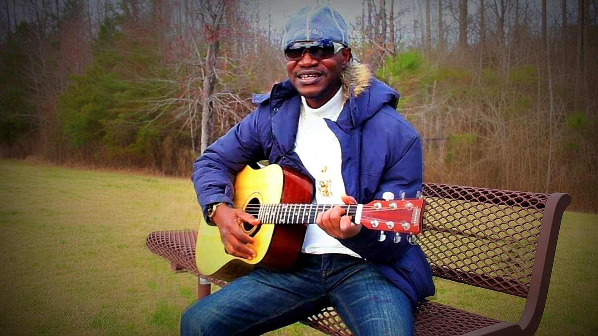

About
MC CONFESS
Olushola Adebowale

Afro-Rhythm with a Message
MC Confess is the stage name of Olushola Adebowale, a Nigerian-born recording artist based in Atlanta, Georgia. He calls his sound Afro-Rhythm with a Message: Afrobeat and hip-hop rooted in Yoruba culture, carrying songs about life, forgiveness and hustle.
His catalog runs from the 2021 single “Aiye” and the 2022 single “Borrow Borrow” with Kunle Kuti to the 2023 album Aiye, the 2024 single “KARMA” with Kunle Kuti, and the 2025 single “Sweet Like Fanta.” He also features on Vish-K’s “Fiya Song” (2022).
He plays several instruments, all in service of his own songs: he writes, records and performs as an artist, not as a hired player.
Olushola is also the Founder of NISMCAA, home of the NISMCAA Music Academy and NISMCAA Tutor.